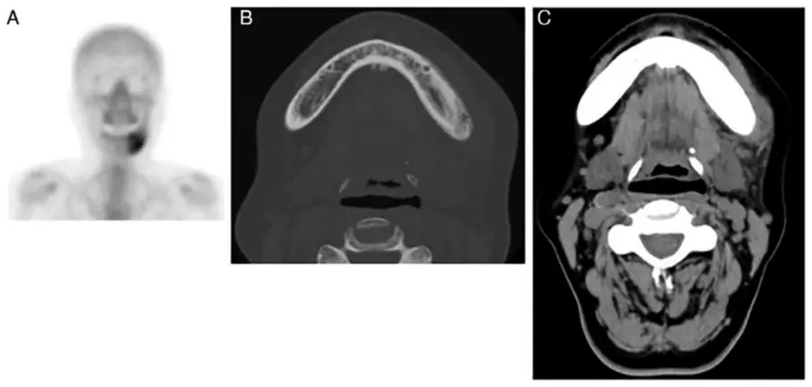
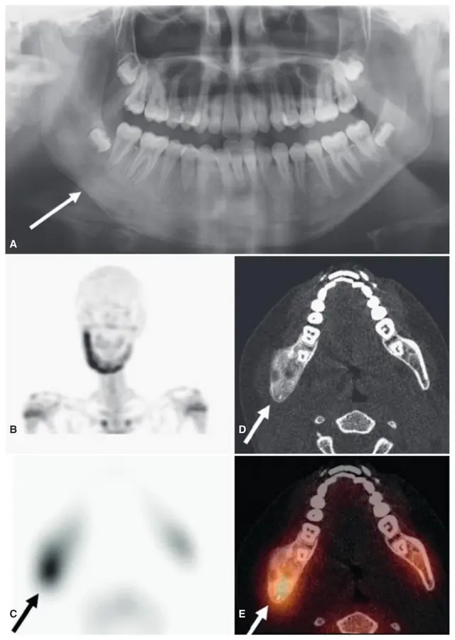

نسخه استخراجشده؛ ترجمه یا تأیید علمی انجام نشده است. وضعیت: captured
یک وارونگی بنیادی در این روش: «در این مودالیته، بافتهای خود بیمار منبع پرتو هستند و تصویر، الگوی توزیع زیستی رادیودارو در یک لحظه را نشان میدهد.» و دو پارامتر کلیدی تفسیر: شدت و محل سیگنال.

و هر رادیودارو دو جزء دارد: «(۱) یک مولکول برای هدفگیری بافت یا اندام مورد نظر، و (۲) یک عنصر رادیواکتیو برای ردیابی توزیع زیستی مولکول هدفگیر.»
و دو شرط طراحی که با هم در تنشاند: «مولکول هدفگیر باید اختصاصی باشد، با جذب بالا در بافت هدف و کمترین جذب غیرهدف.»، و «نیمهعمر رادیونوکلید باید بهقدر کافی بلند باشد تا توزیع زیستی کافی و اختصاصی ممکن شود، ولی بهقدر کافی کوتاه تا پرتوگیری بیمار پس از عمل کمینه گردد.»
| رادیودارو | بافت هدف |
|---|---|
| Tc99m-متیلن دیفسفونات (MDP) Tc99m-هیدروکسیمتیلن دیفسفونات (HMDP) | استخوان |
| Tc99m-پرتکنتات | غدد بزاقی |
| FDG (فلوئورودئوکسیگلوکز با فلوئور-۱۸) | سلولهای فعال متابولیک (سلولهای نئوپلاستیک بدخیم) |
و دو خانوادهی آشکارساز: رادیوداروها یا پرتو گاما میتابانند یا پوزیترون.
و در رادیوداروهای گاماتاب: تصاویر پروجکشن ساخته میشود و «دانسیتهی تصویر در هر نقطه، بزرگی شار فوتون از تجمع رادیودارو را نشان میدهد». و چون «رادیونوکلیدها در همهی جهات پرتو میتابانند، کولیماتور برای ساخت تصاویر پروجکشن از فوتونهای یک مسیر مشخص به کار میرود».
و یک اصل عملی آشنا: «منبع پرتو (بافت مورد نظر) نزدیکترین فاصله به گیرنده قرار میگیرد تا سیگنال تقویت شود.» مثالش: در سینتیگرافی استخوان برای ارزیابی TMJ، «نماهای جانبی راست و چپ جداگانه و نماهای قدامی و خلفی اغلب گرفته میشوند».
و دوربین گاما از چه ساخته شده؟ «بلورهای سینتیلاسیون جفتشده با لولههای فوتومولتیپلایر» — و از همینجاست که این تکنیک سینتیگرافی نامیده میشود.
و محدودیت سینتیگرافی مسطح: «سیگنال، شار خالص فوتون در یک نقطه را نشان میدهد، و سهم ساختارهای در عمقهای مختلف از هم تفکیک نمیشود.» و راهحلش: تصویربرداری مقطعی — SPECT و PET — که «اطلاعات عملکردیشان اغلب روی اطلاعات مورفولوژیک MDCT سوپرایمپوز میشود».
سینتیگرافی استخوان یک تکنیک دوبعدی است که «محلهای گردش فعال استخوان» را نشان میدهد. و رادیونوکلیدش تکنسیوم-۹۹m با دو مشخصهی کلیدی: نیمهعمر ۶ ساعت و «تابش عمدتاً فوتونهای گامای ۱۴۰ کیلوالکترونولت».

و برای تصویربرداری استخوان، به MDP یا HMDP — آنالوگ پیروفسفات — متصل میشود. ویژگیهای این ترکیب: «پایدار است، در بدن متابولیزه نمیشود، و بهسرعت با دفع کلیوی از پلاسما پاک میشود — بیش از ۷۰٪ رادیواکتیویتهی تجویزشده ظرف ۶ ساعت.»
و اعداد کلیدی سینتیگرافی استخوان:
و پروتکل سهفازی — «مفید برای ارزیابی استئومیلیت و تومورهای اولیهی استخوان»:
| فاز | نام | زمان پس از تزریق | اطلاعات عملکردی |
|---|---|---|---|
| ۱ | جریان خون | ۳۰ تا ۶۰ ثانیه | بازتاب عروقرسانی |
| ۲ | حوضچهی خون | ظرف ۱۰ دقیقه | بازتاب درگیری بافت نرم |
| ۳ | تأخیری | ۲ تا ۶ ساعت | بازتاب فعالیت استئوبلاستی |
و الگوی جذب طبیعی که نباید با بیماری اشتباه شود: «جذب رادیونوکلید در استخوان ترابکولار و در نواحی با سطح معدنیسازی بزرگتر مانند ستون فقرات بیشتر است.»، «در کودکان، فعالیت استئوبلاستی همراه با رشد، جذب افزایشیافته در صفحات رشد و استخوانهای صورت میسازد.»، و «گردش استخوانی خفیف همراه با بیماری پریودنتال یا ترمیم حفرهی کشیدن دندان هم بهصورت جذب افزایشیافته بروز میکند».
و SPECT — نسخهی مقطعی: «دوربین گاما ۱۸۰ تا ۳۶۰ درجه گرد بیمار میچرخد و در چند زاویه — معمولاً ۱۲۰ یا بیشتر — تصویر میگیرد.» در هر پروجکشن «داده برای ۲۰ تا ۳۰ ثانیه» جمع میشود و «کل اکتساب تصویر حدود ۳۰ تا ۴۵ دقیقه» میگیرد.
و دو نکتهی مهم: «حرکت جزئی بیمار کیفیت تصویر را تخریب میکند.»، و «تصویربرداری مقطعی سوپرایمپوزیشن را کمینه و کنتراست و تفکیک فضایی را بیشتر میکند». و تصاویر SPECT میتوانند «با تصاویر CT ادغام شوند تا اطلاعات عملکردی و مورفولوژیک با هم بیایند».
و کاربردهای سینتیگرافی و SPECT در ماگزیلوفاسیال: استئومیلیت و استئونکروز فکها، ناهنجاریهای استخوانی TMJ مانند هایپرپلازی و تحلیل کندیل.
و PET — تصویربرداری مقطعی با پوزیترون: رادیودارو پوزیترون میتاباند که با یک الکترون آزاد نابودی متقابل میکند و دو فوتون ۵۱۱ کیلوالکترونولتی در ۱۸۰ درجه نسبت به هم میسازد. حلقهای از آشکارسازها که مقابل هم الکترونیکی جفت شدهاند، این دو فوتون را همزمان ثبت میکنند و همین پایهی مکانیابی است؛ پس کولیماتور لازم نیست. PET تقریباً ۱۰۰ برابر حساستر از دوربین گاماست و در حساسیت، تفکیک فضایی و کمیسازی بر SPECT برتری دارد.
و FDG: فلوئور-۱۸ با نیمهعمر ۱۰۹٫۸ دقیقه. سلولهای بدخیم متابولیسم گلوکز بالا و ناقلهای گلوکز بیشبیانشده دارند؛ FDG با هگزوکیناز فسفریله میشود، ولی FDG-۶-فسفات برخلاف گلوکز-۶-فسفات دیگر متابولیزه نمیشود و در سلول میماند (محبوسشدن متابولیک). حاصل، تصویری عملکردی از متابولیسم گلوکز بافت است.
و سینتیگرافی غدد بزاقی با پرتکنتات: در سندرم شوگرن جذب بهدلیل کاهش عملکرد غده کم است و با تحریک اسیدی تقریباً تغییری نمیکند؛ تومور وارتین و انکوسیتوما جذب بالایی دارند و با تحریک بزاقی کاهش نمییابند.